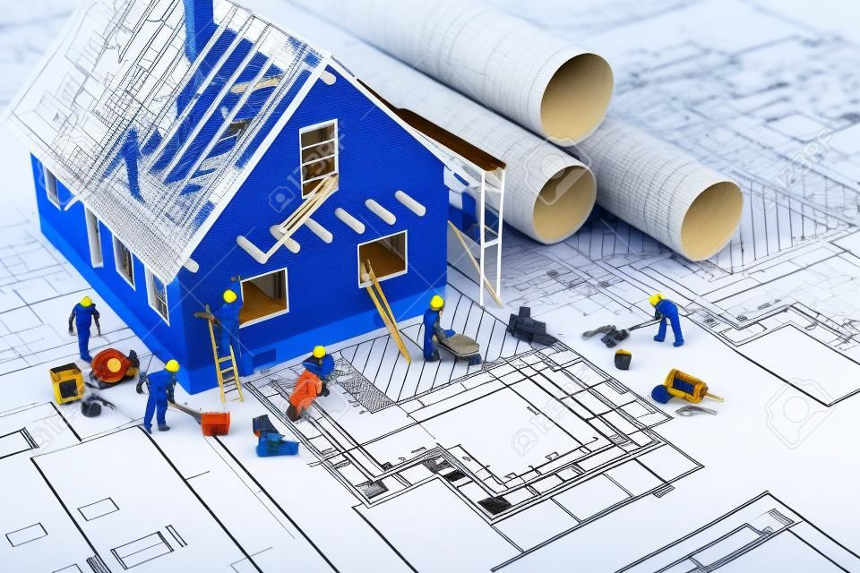

Los comienzos de Remodelaciones Segura fueron modestos pero llenos de determinación.
En una pequeña oficina en el centro de Costa Rica, un equipo de visionarios con una pasión compartida por
la construcción y la renovación comenzó su viaje. Lo que comenzó como una idea audaz pronto se convirtió
en una empresa establecida, y nuestra dedicación inquebrantable a la calidad y la satisfacción del cliente
nos catapultó hacia el éxito.
El Compromiso con la Excelencia
En Remodelaciones Segura, creemos que la excelencia es un viaje interminable.
Nuestro compromiso constante con la perfección y la mejora continua ha sido el faro que ha guiado
cada proyecto que hemos emprendido. Desde la remodelación de pequeñas cocinas hasta la construcción
de majestuosas viviendas, cada uno de nuestros proyectos es una manifestación de nuestro compromiso
con la calidad y la artesanía.

Un Equipo de Expertos
Nuestro equipo es el corazón y el alma de Remodelaciones Segura.
Cada miembro aporta una combinación única de habilidades, experiencia y dedicación a la mesa.
Los arquitectos y diseñadores de interiores infunden vida en los espacios,
los constructores y plomeros garantizan que todo funcione a la perfección, y nuestros especialistas en techos
y estructuras aseguran que tu hogar esté protegido de las inclemencias del tiempo.